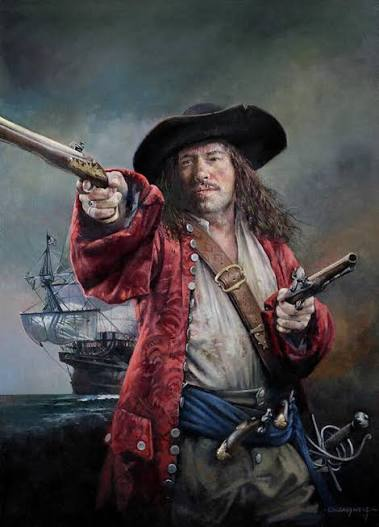

Black Bart
John Roberts (Casnewydd Bach, Gales, 1682-Cabo López, Gabón, 10 de febrero de 1722), más conocido como Bartholomew Roberts, fue un pirata galés. Por el número de sus atracos, estimados en al menos cuatrocientos, ha sido considerado como uno de los más exitosos de la historia. Después de ejercer el oficio de marinero desde muy joven, a sus treinta y siete años decidió ser parte de la tripulación de Howell Davis, iniciando sus correrías en la piratería. Logró armar una escuadrilla de proporción suficiente para desestabilizar la flota británica, en un tiempo donde esta potencia se debatía por mantener sus posesiones en Norteamérica y el Caribe.[4] Es conocido por el reglamento impuesto a su tripulación y también por su peculiar personalidad que se caracterizaba —entre otras particularidades— en el buen trato a las mujeres, la abstinencia de licor y su educación. Su muerte cerró la etapa de mayor auge de la piratería en América.